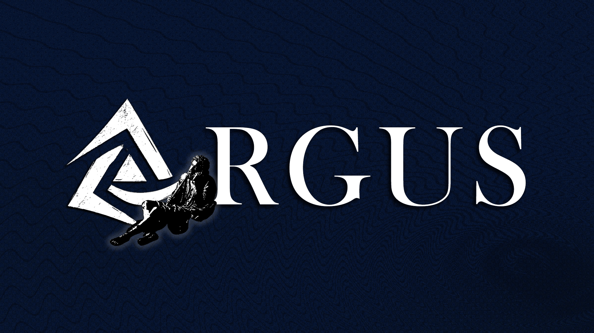
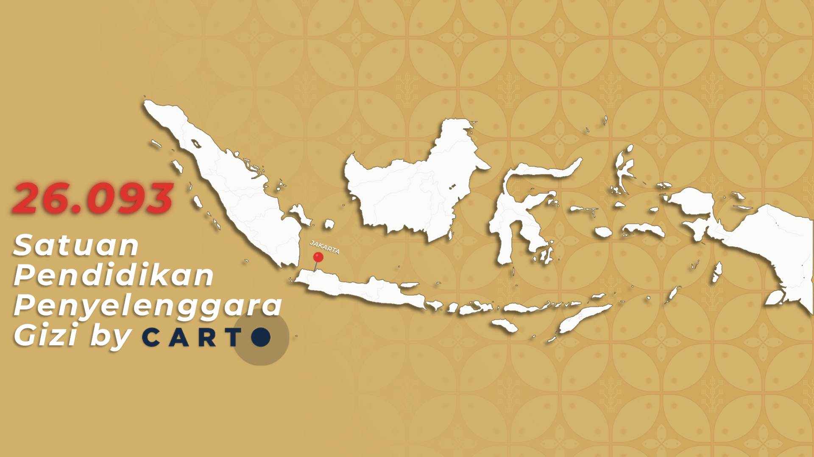
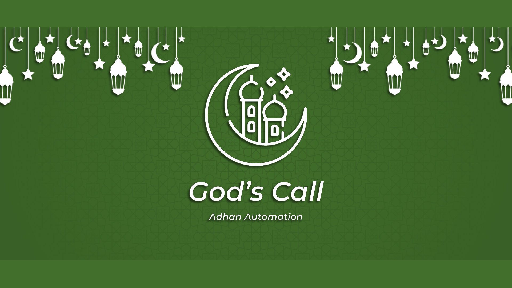
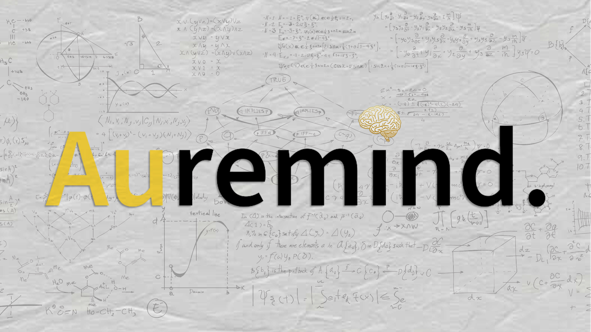

Projects & experiments
Things I've built — from side projects to academic work.

Machine Learning · 2026
Telco Customer Churn
Churn classification model comparing six algorithms with nested cross-validation, with a cost-based decision threshold for targeting retention offers.

Data · 2026
Bluebird - Data Analysis
Operational analysis of 318,000+ Bluebird taxi trips, covering demand fulfillment, fleet productivity, and eVoucher Corporate patterns across five tested hypotheses.

Data · 2026
Gopay - Data Analysis
Credit risk investigation of GoPayLater across 300,000 transactions, auditing data anomalies, a credit limit validation bug, and the patterns behind defaulted payments.

Code · 2026
Store Discount Management System
Command-line app for managing minimarket promotions and applying percentage, Buy 2 Get 1, and fixed discounts at checkout with full rule validation.

Web App · 2026
Argus
Self-hosted, AI-assisted vulnerability management platform that matches assets against live CVE, KEV, and EPSS data and ranks findings by risk.

Web App · 2026
Badan Gizi Nasional - SPPG Carto
End-to-end geospatial data pipeline and visualization system for mapping, enriching, and analyzing 26,000+ SPPG locations across Indonesia.
Bot / Automation · 2025
Tuschology-IDX-Bot
Real-time IDX announcement & Indonesian Market News Bot with priority alerts, structured scraping, Discord topic-based routing, Telegram broadcast, and dynamic market-aware presence system.

IoT / Embedded · 2026
Adhan Caller
Python-based Adhan automation service that fetches daily prayer times, schedules reminders, supports offline caching, and runs reliably as a systemd service on Linux servers.

College Project · 2025
AureMind
An AI-assisted personal management web app built with Django, combining note-taking, task management, and productivity tools within a clean, responsive interface.